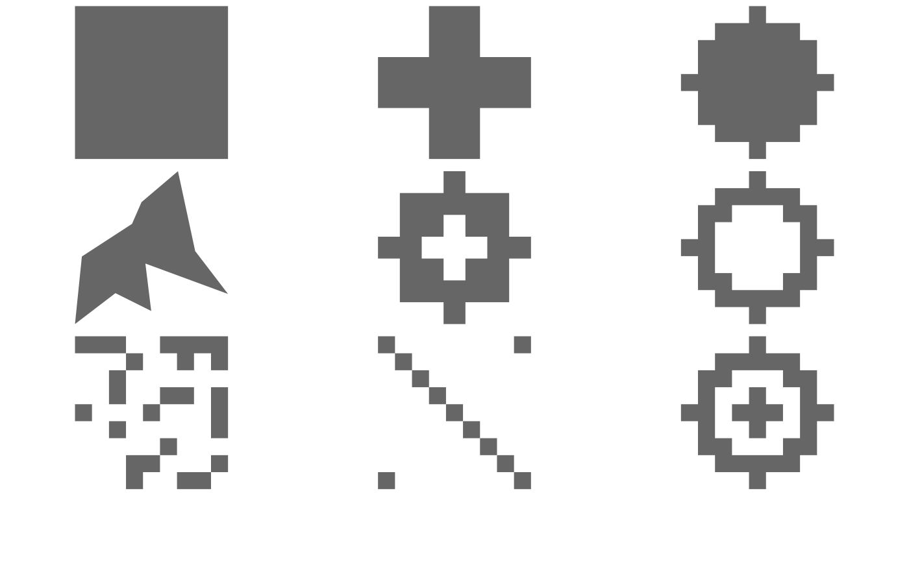
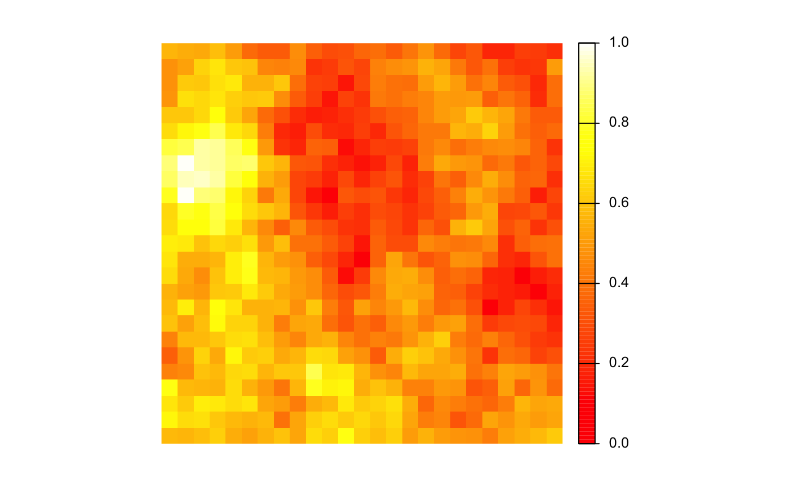
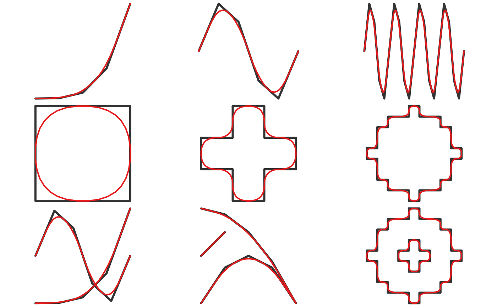
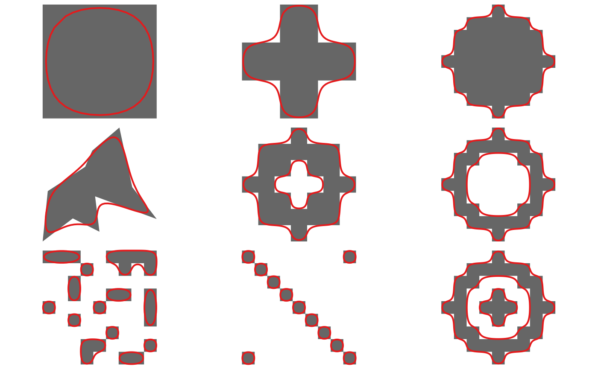
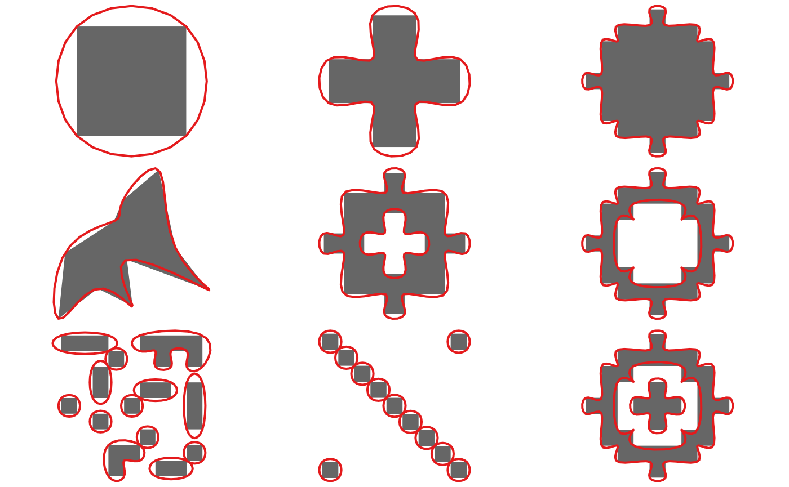
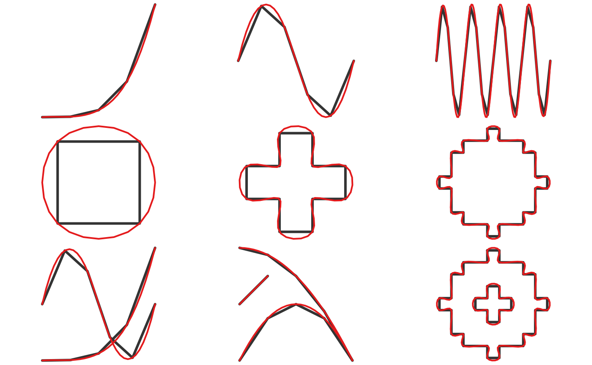
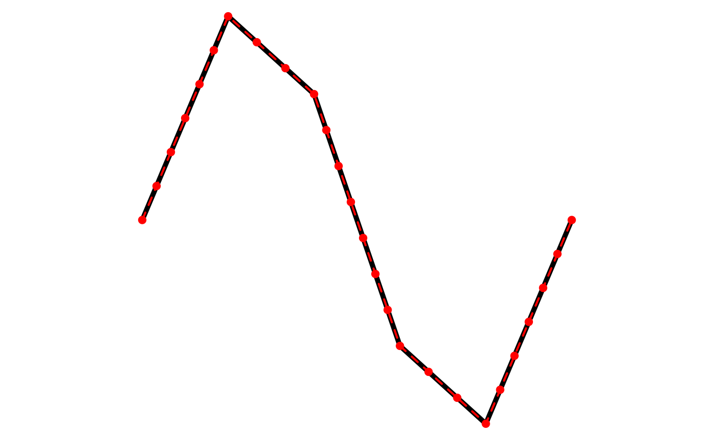
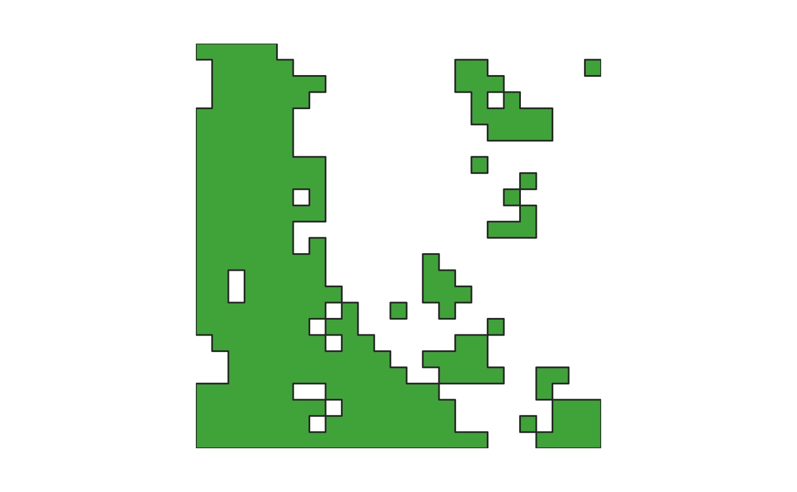
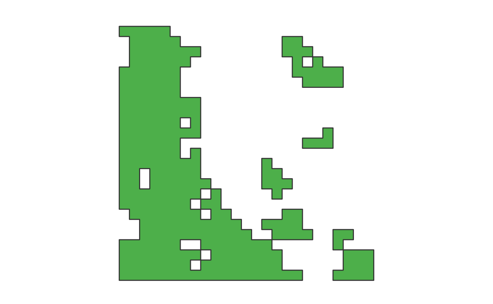

smoothr offers a variety of tools for smoothing and
tidying spatial features (i.e. polygons and lines) to make them more
aesthetically pleasing, especially when converting raster data to vector
format. This package offers support for both sp,
sf, and terra vector objects. The following
smoothing methods are available:
- Chaikin’s corner cutting algorithm: smoothing using Chaikin’s corner cutting algorithm, which iteratively replaces every point by two new points: one 1/4 of the way to the next point and one 1/4 of the way to the previous point. This method applies a moderate amount of smoothing of sharp corners without extensive generalization.
-
Kernel smoothing: smoothing using Gaussian kernel
regression via the
ksmooth()function. This approach first densifies the feature (i.e. adds more vertices) then applies the kernel smoothing. Kernel smoothing simultaneously smooths and generalizes curves, and can be turned to produce extensively smoothed curves. -
Spline interpolation: smoothing using spline
interpolation via the
spline()function. This method interpolates between existing vertices and should be used when the resulting smoothed feature must pass through the vertices of the input feature.
In addition to these smoothing functions, smoothr offers
functions for filling polygon holes and dropping line and polygon
fragments based on a size threshold, as well as densification
(i.e. adding additional vertices along curves).
Example data
This package comes with two simple spatial datasets in
sf format to test the smoothing algorithms on.
jagged_polygons contains 9 polygons with sharp corners
begging to be smoothed out:

Notice that these polygons have a range of complexities, some have holes, and some are mutlipart polygons. Feature attributes help distinguish between the different types.
#> Simple feature collection with 9 features and 4 fields
#> Geometry type: GEOMETRY
#> Dimension: XY
#> Bounding box: xmin: 0 ymin: 0 xmax: 1 ymax: 1
#> Geodetic CRS: WGS 84
#> id type hole multipart geometry
#> 1 1 polygon FALSE FALSE POLYGON ((0.4444444 0.55555...
#> 2 2 polygon FALSE FALSE POLYGON ((0.4444444 0.66666...
#> 3 3 polygon FALSE FALSE POLYGON ((0.4444444 1, 0.55...
#> 4 4 polygon FALSE FALSE POLYGON ((0.7854351 0.47743...
#> 5 5 polygon TRUE FALSE POLYGON ((0.4444444 0.88888...
#> 6 6 polygon TRUE FALSE POLYGON ((0.4444444 1, 0.55...
#> 7 7 polygon FALSE TRUE MULTIPOLYGON (((0 1, 0 0.88...
#> 8 8 polygon FALSE TRUE MULTIPOLYGON (((0 1, 0 0.88...
#> 9 9 polygon TRUE TRUE MULTIPOLYGON (((0.4444444 1...jagged_lines contains 9 polylines with disgustingly
crooked edges.

Again, there’s a range of complexities, some lines form closed loops, and some are multipart.
#> Simple feature collection with 9 features and 4 fields
#> Geometry type: GEOMETRY
#> Dimension: XY
#> Bounding box: xmin: 0 ymin: 0 xmax: 1 ymax: 1
#> Geodetic CRS: WGS 84
#> id type closed multipart geometry
#> 1 1 line FALSE FALSE LINESTRING (0 0, 0.25 0.003...
#> 2 2 line FALSE FALSE LINESTRING (0 0.5, 0.2 0.97...
#> 3 3 line FALSE FALSE LINESTRING (0 0.5, 0.05 0.9...
#> 11 4 line TRUE FALSE LINESTRING (0.4444444 0.555...
#> 21 5 line TRUE FALSE LINESTRING (0.4444444 0.666...
#> 5 6 line TRUE FALSE LINESTRING (0.4444444 1, 0....
#> 12 7 line FALSE TRUE MULTILINESTRING ((0 0, 0.25...
#> 22 8 line FALSE TRUE MULTILINESTRING ((0 0, 0.25...
#> 31 9 line TRUE TRUE MULTILINESTRING ((0.4444444...The final dataset that comes with this package,
jagged_raster, is a simulated occurrence probability for a
species, consisting of a spatially auto-correlated raster layer with
values between 0 and 1. It is a 25x25 grid of 100 square kilometer cells
in a North American centered Albers Equal Area projection. This raster
can be used to experiment with smoothing polygons generated from
rasters. It is a wrapped SpatRaster object, so we need to
call rast() to unwrap it prior to use.
plot(rast(jagged_raster), col = heat.colors(100), axes = FALSE)
Smoothing methods
Currently, three smoothing methods have been implemented: Chaikin’s
corner cutting algorithm, Gaussian kernel smoothing, and spline
interpolation. All are accessed with the smooth() function,
and all methods work on spatial lines and polygons in sf
and sp format.
Chaikin’s corner cutting algorithm
Chaikin’s corner cutting algorithm smooths by iteratively replacing every point by two new points: one 1/4 of the way to the next point and one 1/4 of the way to the previous point. This method applies a moderate amount of smoothing of sharp corners without extensive generalization, and is a good choice when the desire is to smooth without drastically altering the input features. In addition, this algorithm has the benefit of only requiring a single, easily interpretable parameter: the number of smoothing iterations.
This method can be applied with
smooth(x, method = "chaikin"). Here’s what this looks like
for the polygons:
p_smooth_chaikin <- smooth(jagged_polygons, method = "chaikin")
for (i in 1:nrow(jagged_polygons)) {
plot(st_geometry(jagged_polygons[i, ]), col = "grey40", border = NA)
plot(st_geometry(p_smooth_chaikin[i, ]), col = NA, border = "#E41A1C",
lwd = 2, add = TRUE)
}
And for the lines:
l_smooth_chaikin <- smooth(jagged_lines, method = "chaikin")
for (i in 1:nrow(jagged_lines)) {
plot(st_geometry(jagged_lines[i, ]), col = "grey20", lwd = 3)
plot(st_geometry(l_smooth_chaikin[i, ]), col = "#E41A1C", lwd = 2, add = TRUE)
}
Kernel smoothing
This method applies Gaussian kernel regression to the x and y
coordinates independently using the built-in ksmooth()
function. Prior to smoothing, additional vertices are added via
densification with smooth_densify(). For polygons (and
closed lines), method = "periodic" is used to avoid getting
a kink at the start/end of the curve defining the boundary.
Kernel smoothing simultaneously smooths and generalizes curves, and
can be tuned to produce drastically smoothed curves. This method
produces results similar to the PAEK
algorithm used in ArcGIS. smooth_ksmooth() has
parameters specifying the number of points in the resulting feature
(either the number of sub-segments to split each line segment into or
the maximum distance between points) and the bandwidth of the Gaussian
kernel. Choosing a suitable bandwidth is critical for correctly
smoothing features using this algorithm and typically users will want to
explore a range of bandwidth to find a value that works for their
particular scenario.
This method can be applied with
smooth(x, method = "ksmooth"). Here’s what this looks like
for the polygons:
p_smooth_ksmooth <- smooth(jagged_polygons, method = "ksmooth")
for (i in 1:nrow(jagged_polygons)) {
plot(st_geometry(jagged_polygons[i, ]), col = "grey40", border = NA)
plot(st_geometry(p_smooth_ksmooth[i, ]), col = NA, border = "#E41A1C",
lwd = 2, add = TRUE)
}
And for the lines:
l_smooth_ksmooth <- smooth(jagged_lines, method = "ksmooth")
for (i in 1:nrow(jagged_lines)) {
plot(st_geometry(jagged_lines[i, ]), col = "grey20", lwd = 3)
plot(st_geometry(l_smooth_ksmooth[i, ]), col = "#E41A1C", lwd = 2, add = TRUE)
}
Spline interpolation
This method applies a spline interpolation to the x and y coordinates
independently using the built-in spline() function. For
polygons (and closed lines), method = "periodic" is used to
avoid getting a kink at the start/end of the curve defining the
boundary. Unlike the corner cutting algorithm, this method results in a
curve that passes through the vertices of the original curve, which may
be a desirable feature. Unfortunately, this results in an unnaturally
wiggly curve. Spline interpolation requires a parameter specifying the
number of points to interpolate at, which can either be an absolute
number or a relative increase in the number of vertices.
This method can be applied with
smooth(x, method = "spline"). Here’s what this looks like
for the polygons:
p_smooth_spline <- smooth(jagged_polygons, method = "spline")
for (i in 1:nrow(jagged_polygons)) {
plot(st_geometry(p_smooth_spline[i, ]), col = NA, border = NA)
plot(st_geometry(jagged_polygons[i, ]), col = "grey40", border = NA,
add = TRUE)
plot(st_geometry(p_smooth_spline[i, ]), col = NA, border = "#E41A1C",
lwd = 2, add = TRUE)
}
And for the lines:
l_smooth_spline <- smooth(jagged_lines, method = "spline")
for (i in 1:nrow(jagged_lines)) {
plot(st_geometry(l_smooth_spline[i, ]), col = NA)
plot(st_geometry(jagged_lines[i, ]), col = "grey20", lwd = 3, add = TRUE)
plot(st_geometry(l_smooth_spline[i, ]), col = "#E41A1C", lwd = 2, add = TRUE)
}
Other goodies
smoothr contains some additional tools that aren’t
strictly for smoothing, but can help clean up polygons and lines and
make them appear more aesthetically pleasing. I’ll outline these
miscellaneous tools below.
Densification
Densification is the process of adding additional points to the line segments defining polylines or polygons. Each line segment is split into multiple sub-segments of equal length, and the original vertices are always included in the densified feature. Note that the densification algorithm treats all vertices as Euclidean points, i.e. new points will not fall on a great circle between existing vertices, rather they’ll be along a straight line.
Use smooth(method = "densify"), or it’s alias
densify() to perform densification. The degree of
densification can either be specified as the number of sub-segments each
line segment is split into (n):
l <- jagged_lines$geometry[[2]]
# split every segment into 2
l_dense <- densify(l, n = 2)
plot(l, lwd = 5)
plot(l_dense, col = "red", lwd = 2, lty = 2, add = TRUE)
plot(l_dense %>% st_cast("MULTIPOINT"), col = "red", pch = 19, add = TRUE)Or the maximum Euclidean distance between vertices
(max_distance):
l <- jagged_lines$geometry[[2]]
# split every segment into 2
l_dense <- densify(l, max_distance = 0.1)
plot(l, lwd = 5)
plot(l_dense, col = "red", lwd = 2, lty = 2, add = TRUE)
plot(l_dense %>% st_cast("MULTIPOINT"), col = "red", pch = 19, add = TRUE)
Drop crumbs
drop_crumbs() removes small lines or polygons based on a
length or area threshold. For multipart features, this function dives
into the individual component features and applies the threshold. The
threshold can either be provided as a number, assumed to be in the units
of the coordinates reference system (meters for unprojected
coordinates), or as a units object. This latter approach
provides more flexibility because a threshold can be given in any type
of units and it will be converted to the correct units
automatically.
For example, to remove polygons less than 200 square kilometers:
p <- jagged_polygons$geometry[7]
area_thresh <- units::set_units(200, km^2)
p_dropped <- drop_crumbs(p, threshold = area_thresh)
plot(p, col = "black", main = "Original")
plot(p_dropped, col = "black", main = "After drop_crumbs()")And, to remove lines shorter than 25 miles:
l <- jagged_lines$geometry[8]
# note that any units can be used
# conversion to units of projection happens automatically
length_thresh <- units::set_units(25, miles)
l_dropped <- drop_crumbs(l, threshold = length_thresh)
plot(l, lwd = 5, main = "Original")
plot(l_dropped, lwd = 5, main = "After drop_crumbs()")Fill holes
fill_holes() fills (i.e. removes) holes in polygons when
they are below a given area threshold. As with
drop_crumbs(), the threshold can either be provided as a
number or a units object.
For example, to remove holes less than 800 square kilometers in size:
p <- jagged_polygons$geometry[5]
area_thresh <- units::set_units(800, km^2)
p_dropped <- fill_holes(p, threshold = area_thresh)
# plot
plot(p, col = "black", main = "Original")
plot(p_dropped, col = "black", main = "After fill_holes()")Raster-to-polygon conversion
The whole point of this smoothr business was to smooth
out polygons generated from rasters, so let’s work through a quick
example of that. Treating jagged_raster as the occurrence
probability for a species, imagine we want to produce a range map for
this species, showing where it occurs with at least 50% probability. We
can convert the raster to a binary presence/absence map, then
polygonize.
# unwrap for use
data(jagged_raster)
jagged_raster <- rast(jagged_raster)
# pres/abs map
r <- classify(jagged_raster, rcl = c(-Inf, 0.5, Inf)) %>%
as.numeric()
plot(r, col = c("white", "#4DAF4A"), legend = FALSE, axes = FALSE)
# polygonize
r_poly <- ifel(r > 0, r, NA) %>%
as.polygons() %>%
st_as_sf()
plot(r_poly, col = NA, border = "grey20", lwd = 1.5, add = TRUE)
To start cleaning this up, let’s remove all the small polygons resulting from a single raster cell. Recall that the cells is this raster are 100 square kilometers each.
r_poly_dropped <- drop_crumbs(r_poly, set_units(101, km^2))
# plot
plot(r_poly_dropped, col = "#4DAF4A", border = "grey20", lwd = 1.5, main = NULL)
There are two holes in the large central polygon. Next, let’s fill in the smaller of the two holes, which is two raster cells (200 square kilometers) in size, but keep the larger one.
r_poly_filled <- fill_holes(r_poly_dropped, set_units(201, km^2))
# plot
plot(r_poly_filled, col = "#4DAF4A", border = "grey20", lwd = 1.5, main = NULL)Finally, to make this more aesthetically pleasing, let’s smooth out those sharp edges.
r_poly_smooth <- smooth(r_poly_filled, method = "ksmooth")
# plot
plot(r_poly_smooth, col = "#4DAF4A", border = "grey20", lwd = 1.5, main = NULL)
For a greater degree of smoothing and generalization, increase the
smoothness parameter:
r_poly_smooth <- smooth(r_poly_filled, method = "ksmooth", smoothness = 2)
# plot
plot(r_poly_smooth, col = "#4DAF4A", border = "grey20", lwd = 1.5, main = NULL)Nice, so much easier on the eyes!
References
Chaikin’s corner cutting algorithm:
- Chaikin, G. An algorithm for high speed curve generation. Computer Graphics and Image Processing 3 (1974), 346–349 -http://www.cs.unc.edu/~dm/UNC/COMP258/LECTURES/Chaikins-Algorithm.pdf
- Where to find Python implementation of Chaikin’s corner cutting algorithm?
Kernel smoothing:
Spline interpolation: